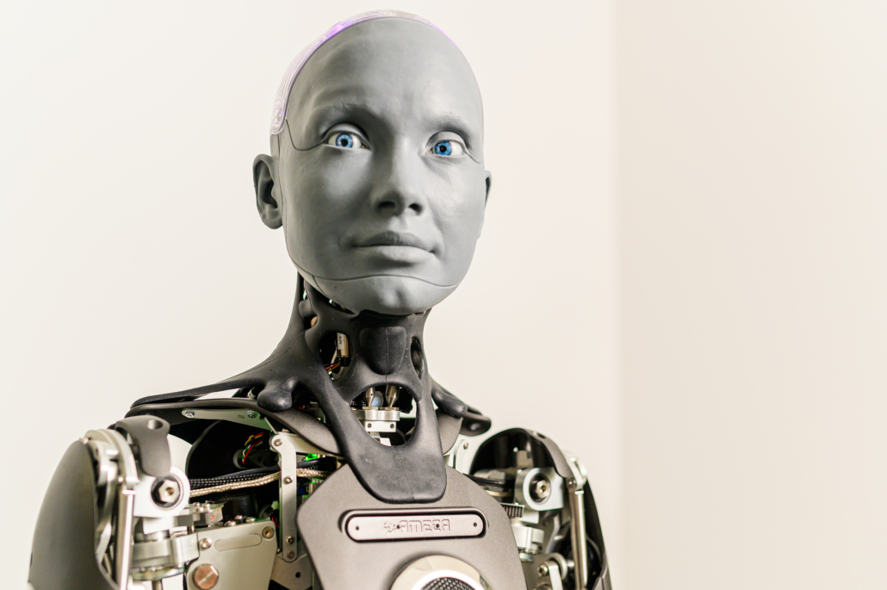

01 / Persistent reference
Remember the conversation.
Keep the last visible reference distinct from a claim about where the cup is now.
A speaker points to a cup. A screen blocks the view. Does “that one” still identify the same object? Explore how a conversational robot could preserve context—and ask when the evidence no longer resolves the reference.

At 60% the screen fully hides both cups in this illustration. This slider controls visibility; it is not a model confidence score.
Keep the last visible reference distinct from a claim about where the cup is now.
If a change could occur behind the screen, the visible history cannot establish the current location.
When the gesture itself is hidden, ask “left or right?” before describing the wrong object.
Research question: can an occlusion-aware conversational state reduce incorrect object references without asking unnecessary questions? This prototype specifies test cases; it does not demonstrate a trained method or a measured improvement.